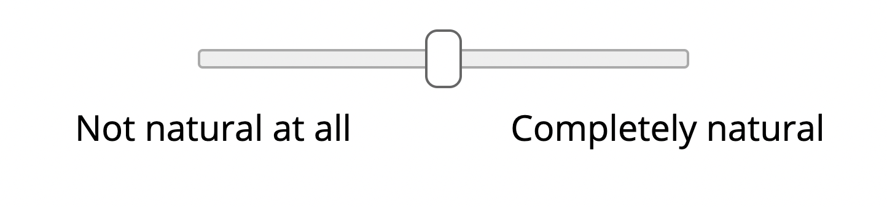

<!DOCTYPE html>
<html>
  <head>
    <title>Experiment</title>
    <script src="/socket.io/socket.io.js" type="text/javascript"></script>
    <script type="text/javascript" src="https://cdn.jsdelivr.net/npm/lodash@4.17.10/lodash.min.js"></script>
    <script src="jsPsych/jspsych.js"></script>
    <script src="jsPsych/plugins/jspsych-html-keyboard-response.js"></script>
    <script src="jsPsych/plugins/jspsych-instructions.js"></script>
    <script src="jsPsych/plugins/jspsych-html-button-response.js"></script>
    <script src="jsPsych/plugins/jspsych-html-slider-response.js"></script>
    <script src="jsPsych/plugins/jspsych-survey-text.js"></script>
    <script src="jsPsych/plugins/jspsych-survey-multi-choice.js"></script>
    <link href="jsPsych/css/jspsych.css" rel="stylesheet" type="text/css"></link>
  </head>
  <body></body>
  <script>
    var preview = {
      type: 'instructions',
      pages: ['<p> Welcome! In this HIT, you will make a series of quick decisions about language. </p>' +
              '<p> <b> If you are interested in learning more about this HIT, ' +
              'please first accept the HIT in MTurk before continuing further</b>. </p>'],
      show_clickable_nav: false,
      allow_keys: false
    }

    var welcome = {
      type: 'html-keyboard-response',
      stimulus:
        'Thank you for accepting the HIT. Press any key to begin.'
    }

    var consent = {
      type: 'html-button-response',
      stimulus:
        "<font size='2'><p align=left style='width:50%;margin:auto'> \
	This research is being conducted by Takateru Yamakoshi, an undergraduate student, \
        Robert Hawkins, a postdoctoral researcher, and Tom Griffiths, a faculty member at Princeton \
        University. This study takes approximately 10 minutes to complete.</p> \
        <br> \
        <p style='width:50%;margin:auto' align='left'>If you agree to take part in the research, you will make a series \
        of judgments about sentences. You will be presented with information displayed as text and \
        will be asked to move a slider to express your judgment. \
        All of the information we obtain during the research will be kept \
        confidential, and not associated with your name in any way. However, \
	while the study is running it will be associated with your MTurk \
        worker id. Once the study is complete we will replace your worker id \
        with a random string.</p> \
        <br> \
        <p style='width:50%;margin:auto' align='left'>If you have any questions about this research, do not hesitate to \
        contact Robert Hawkins at <b>hawkrobe@gmail.com</b>. If you have any questions \
        about your rights or treatment as a participant in this research project, \
        please contact the Princeton Office for Research Integrity and Assurance \
        by phone at 609-258-0865 or by email at ria@princeton.edu.</p> \
        <br>\
        <p style='width:50%;margin:auto' align='left'>By consenting to participate, you acknowledge that you are 18 years \
        or older, have read this consent form, agree to its contents, and agree \
        to take part in this research. If you do not wish to consent, close \
        this page and return the HIT on Mechanical Turk.</p></font>",
      choices: ['I consent to participate.']
    }

    window.onload = function() {
      setupGame();
    }

    window.onbeforeunload = function() {
      // Doesn't give prompt if leaving experiment after final trial or
      // failing three quiz attempts.
      var pComplete = jsPsych.progress()['percent_complete'];
      var trialType = jsPsych.currentTrial()['type'];
      if ((!turkInfo.previewMode) & (pComplete != 100) & ((Math.round(pComplete) != 33) || (trialType != 'survey-multi-choice'))) {
        return "Data will be lost if you leave the page, are you sure?";
      }
    };
    
    function setupGame () {
      var socket = io.connect();
      var timeline = [];

      // Values fixed for human experiments.
      var iterationName = 'mturk_sample'
      var sliderWidthScale = 0.5
      var maxQuizAttempts = 3

      // Start building timeline when we hear from server
      socket.on('onConnected', function(mongoData) {
        // get workerId, etc. from URL (so that it can be sent to the server)
        var turkInfo = jsPsych.turk.turkInfo();
	console.log(mongoData)
	console.log(mongoData.trials)
	var trials = _.values(_.shuffle(mongoData.trials))
        
        // if still in preview mode, tell them to accept first, otherwise show first slide
        if (!turkInfo.previewMode) {
          timeline.push(welcome);
          timeline.push(consent);
        } else {
          timeline.push(preview);
        }

        var ready_screen = {
          type: "instructions",
          pages : ["<p align=left style='width:50%;margin:auto'>\
                     We are interested in your intuitions about the English language! Computers are getting better and better at producing natural-sounding language, but sometimes they still sound a little weird. Then again, people sometimes write weird-sounding sentences, too! In this study, we will show you some sentences written by computers and humans and ask you to rate how natural they sound.</p>",
                   "<p align=left style='width:50%;margin:auto'>\
                      On each screen, you will see a sentence at the top of the screen and a slider at the bottom of the screen.\
                      The slider ranges from 'Not natural at all' to 'Completely natural'.  \
                      Please read the sentence carefully, then indicate where it falls on this naturalness scale.</p>\
                       </img>",
                   "<p align=left style='width:50%;margin:auto'>\
                      Sometimes, the sentence can sound somewhere in between, \
                      in which case you would place the slider closer to the center. \
                      Let's begin with a couple examples to get used to how it works.",
                   "<p>Here is a sentence: <br></p>\
                      <p><b>It is a local municipality located within the West Coast District Municipality.</p></b>\
                      <p>Take a minute to think about this sentence and how natural it sounds!</p>",
                   "<p align=left style='width:50%;margin:auto'>\
                      It turns out that this one was actually written by humans (on Wikipedia!)\
                      If it sounded normal to you, you would position the slider quite far toward the 'Completely natural' option, as shown below:</p>",
                   "OK, here's another example. Do you think this is a normal sentence written by a human? <br>\
                    <p><b>A colorless green ideas sleep furiously.<b></p>",
                   "<p align=left style='width:50%;margin:auto'>\
                      This is a pretty weird sentence! It turns out to be written by a computer, probably imitating the kind of writing found in linguistics textbooks.\
                      In this case, you would position the slider closer to the left! Please keep in mind, however, that many cases will not be clear, and different sentences\
                      may sound more or less natural to different people, so just think hard and tell us what you think!</p>",
                   "<p align=left style='width:50%;margin:auto'>\
                    You will receive a completion bonus of $1.00 if you make careful judgements for all 25 sentences. \
                    We will closely monitor your responses and may terminate the study early with no completion bonus \
                    if we detect anomalies in your behavior suggesting that you are not reading carefully.</p>",
                   "<p align=left style='width:50%;margin:auto'>\
                    Before we begin, you must complete a short quiz to \
                    show that you understand the task. You must pass the quiz within \
                    <b>1 attempt</b> to proceed to the experiment, so think carefully about your responses!</p>"
                  ],
          show_clickable_nav: true,
          allow_backward : false
        }

        timeline.push(ready_screen);

        var quizTrial = {
          type: 'survey-multi-choice',
          questions:
          [{prompt: "How many sentences will you see on each screen?",
            options: ["One", "Two", "Three","Ten"],
            required:true},
           {prompt: "<br>Which question will you be answering on each screen?",
            options: ["How long is this sentence?", "How funny is this sentence?", "How natural does this sentence sound?"],
            required: true},
           {prompt: "<br>What happens if you do <b>not</b> read each pair of sentences carefully?",
            options: ["I will click through everything quickly and get my completion bonus!",
                      "The experiment will be terminated and I will not receive a completion bonus."],
            required: true},
           {prompt: "<br>What should I do if I'm not sure?",
            options: ["Move the slider closer to the middle",
                      "Randomly pick one of the ends of the slider"],
            required: true},
          ]
        };

        timeline.push(quizTrial)
        var true_answers = {
          "Q0":"One",
          "Q1":"How natural does this sentence sound?",
          "Q2":"The experiment will be terminated and I will not receive a completion bonus.",
          "Q3":"Move the slider closer to the middle"
        }

        var if_passed_node = {
          timeline: [{
            type: 'html-button-response',
            stimulus: 'Congratulations, you passed the quiz! Ready to start?',
            choices: ['Begin experiment']
          }],
          conditional_function: function(){
            // get the data from the previous trial,
            // and check which key was pressed
	    console.log(JSON.stringify(jsPsych.data.get().last(1).values()[0]['response']))
            var resp = JSON.parse(JSON.stringify(jsPsych.data.get().last(1).values()[0]['response']));
            if ((resp["Q0"] == true_answers['Q0']) &&
                (resp["Q1"] == true_answers['Q1']) &&
                (resp["Q2"] == true_answers['Q2']) &&
                (resp["Q3"] == true_answers['Q3'])) {
              return true;
            } else {
              return false;
            }
          }
        }

        var if_failed_node = {
          timeline: [{
            type: 'html-button-response',
            stimulus: 'Oh no! You did not correctly complete the quiz. \
                       Please click the button to terminate and submit the HIT. \
                       You will still be paid the base pay for participating.',
            choices: ['End experiment']
          }],
          conditional_function: function(){
            // get the data from the previous trial,
            // skip if they've already passed the quiz, otherwise check...
            if(jsPsych.data.get().last(1).values()[0]['trial_type'] == 'html-button-response') {
              return false;
            } else {
	      var resp = JSON.parse(JSON.stringify(jsPsych.data.get().last(1).values()[0]['response']));
              if ((resp["Q0"] == true_answers['Q0']) &&
                  (resp["Q1"] == true_answers['Q1']) &&
                  (resp["Q2"] == true_answers['Q2']) &&
                  (resp["Q3"] == true_answers['Q3'])){
                return false;
              } else {
                return true;
              }
            }
          },
          on_finish: function() {
	    //            jsPsych.endExperiment()
	    //jsPsych.turk.submitToTurk({'bonus': '0'});
	    window.location.replace("https://app.prolific.co/submissions/complete?cc=394CC1E4")
          }
        }

        timeline.push(if_passed_node);
        timeline.push(if_failed_node);
	
        _.forEach(trials, function(trial) {
          var sentence_stimulus = "\
            <div style='margin-left:25%;width:50%;text-align:left'>\
              <p>How natural does this sentence sound?<br></p>\
              <p><b>" + trial.sentence + "</b></p>\
            </div>";
          timeline.push({
            type: "html-slider-response",
            stimulus: sentence_stimulus,
            prompt: "",
            labels: ['Very weird', 'Very natural'],
            slider_width: Math.min(sliderWidthScale * window.innerWidth, 500),
            require_movement: true,
	    data: _.extend({}, trial, {
	      'stimulus_type': 'main_judgement'
	    })
          });
        })

        var catch_stimulus1 = "\
          <div style='margin-left:25%;text-align: left'>\
            <p>Which sentence sounds more natural, A or B?<br></p>\
            <p>A : The man ate a slice of cake.</p>\
            <p>B : The man cake of slice ate a.</p>\
          </div>";

	var catch_stimulus2 = "\
          <div style='margin-left:25%;text-align: left'>\
            <p>Which sentence sounds more natural, A or B?<br></p>\
            <p>A : The woman ball him the kicked.</p>\
            <p>B : The woman kicked him the ball.</p>\
          </div>";

        var catch_trial1 = {
          type: "html-slider-response",
          stimulus: catch_stimulus1,
          prompt: "",
          labels: ['A is much more natural', 'about the same', 'B is much more natural'],
          slider_width: sliderWidthScale * window.innerWidth,
          require_movement: true,
          data: {'stimulus_type': 'catch1', 'highValueMeans' : 'error' }
        };
        var catch_trial2 = {
          type: "html-slider-response",
          stimulus: catch_stimulus2,
          prompt: "",
          labels: ['A is much more natural', 'about the same', 'B is much more natural'],
          slider_width: sliderWidthScale * window.innerWidth,
          require_movement: true,
          data: {'stimulus_type': 'catch2', 'highValueMeans' : 'correct' }
        };
        var catch_failed_node = {
          timeline: [{
            type: 'html-button-response',
            stimulus: "<div style='margin-left:25%;text-align: left'>\
                       We've detected anomalies in your responses that indicate you were not responding carefully. \
                       Please click the button to terminate and submit the HIT. \
                       You will still be paid the base pay for participating.</div>",
            choices: ['End experiment']
          }],
          conditional_function: function(){
            // get the data from the previous trial,
            // and check which key was pressed
            var resp = jsPsych.data.get().last(1).values()[0];
            if(_.has(resp, 'highValueMeans') &&
	       ((resp['highValueMeans'] == 'correct' & parseFloat(resp['response']) < 50) ||
                (resp['highValueMeans'] == 'error' & parseFloat(resp['response']) > 50))) {
               return true;
             } else {
              return false;
              }
          },
          on_finish: function() {
            //jsPsych.turk.submitToTurk({'bonus': '0'});
	    window.location.replace("https://app.prolific.co/submissions/complete?cc=394CC1E4")
          }
        }

        // Put one catch trial in trials 1-12
        var catch_trial_index1 = timeline.length - Math.floor(Math.random()*(12));
	timeline.splice(catch_trial_index1, 0, catch_trial1)
        timeline.splice(catch_trial_index1+1, 0, catch_failed_node)
	
        // Put another catch trial in trials 13-25
        var catch_trial_index2 = timeline.length - Math.floor(Math.random()*(12));
	timeline.splice(catch_trial_index2, 0, catch_trial2)
	timeline.splice(catch_trial_index2+1, 0, catch_failed_node)

        var exit_survey = {
          type: 'survey-text',
          questions: [
            {prompt: "Do you have any comments or suggestions for us? What exactly seemed weird about the weird sentences?"}
          ],
          data: {
            stimulus_type: 'exit_survey'
          }
        };

        timeline.push(exit_survey)

        var goodbye = {
          type: 'html-keyboard-response',
          stimulus: 'Thank you for participating! Press any key to to be ' +
            'redirected to the completion page. You will be paid the base rate of ' +
	    '$0.50 immediately after your HIT is approved, and will receive an additional ' +
	    'completion bonus of $1 within 48 hours.'
        };

        timeline.push(goodbye);

	jsPsych.data.addProperties({
          gameid: mongoData.gameid,
	  setid: mongoData.set_id
        });

        jsPsych.init({
          timeline: timeline,
          show_progress_bar: true,
          on_finish : function(data) {
            // At the end of the experiment, submit to turk
            // Record number of quiz attempts
            //jsPsych.turk.submitToTurk({'bonus': '1.00'});
            window.location.replace("https://app.prolific.co/submissions/complete?cc=394CC1E4")
          },
          on_trial_finish: function(trialData) {
            // At the end of each trial, send data to server
            //const queryString = window.location.search;
            //const urlParams = new URLSearchParams(queryString);

            var packet = _.extend({}, trialData, {
              dbname: 'telephone-game',
              colname: 'pilot',
              wID: turkInfo.workerId,
              aID: turkInfo.assignmentId,
              hitID: turkInfo.hitId,
              iterationName: iterationName
            })
	    console.log(trialData)
	    socket.emit('currentData', packet);
          }
        });
      });
    }
  </script>
</html>
